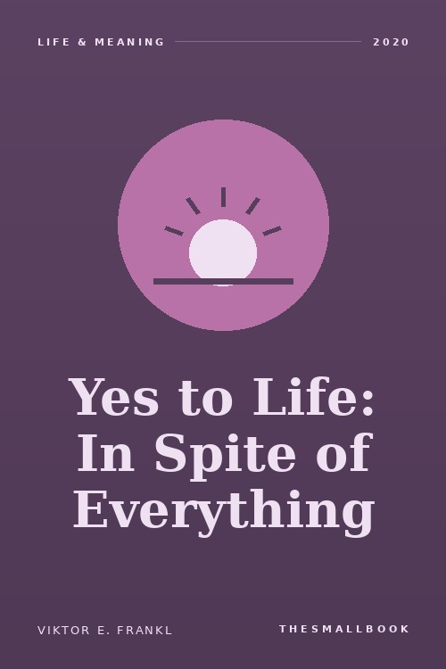

Library › Life & Meaning
Yes to Life: In Spite of Everything - Summary & Key Lessons

Viktor E. Frankl's lost lectures of 1946, recovered and published: how to say yes to life after the worst year in human history.
📖 OPEN THE FULL INTERACTIVE BREAKDOWN →🌐 Read it in Hindi, Hinglish, Gujarati, Tamil & 22 more languages, with audio.
💡 The Big Idea
In 1946, a year after his liberation and the confirmation of his family's murder, Viktor E. Frankl delivered three public lectures in Vienna on meaning, suffering and the human spirit. The manuscripts were rediscovered decades later and published as Yes to Life. Compressed and urgent, they present logotherapy before Man's Search for Meaning made it famous: meaning is found in work, in love, and in the stance taken toward unavoidable suffering, and a person who has a why can be asked almost any how. The timing is the argument.
🧠 The 8 Key Lessons
Lesson 1: Life Asks the Questions; We Answer With Our Lives
The Lectures
Viktor E. Frankl reverses the usual complaint. We do not get to interrogate life about its meaning and file the answer; life interrogates us, hour by hour, with tasks and fates, and our conduct is the reply. The lectures press the consequence: responsibility is not a burden added to existence but its very substance, because each person is uniquely asked, irreplaceable in the asking. Delivered to a ruined city of people asking what the point had been, the argument landed as oxygen: your life still has a question with your name on it.
📖 Example: He tells his audience of a man who believed his existence pointless and was asked what his deceased wife would have suffered had she outlived him into that despair. The reframing, his grief as the price of sparing her, is logotherapy's signature move performed live, in a lecture hall, in 1946, on listeners whose losses were months old. Read the full example →
⚡ Do this: Write the question life is currently asking you, in one sentence. Answer it with one act this week, however small.
Lesson 2: Suffering Is Not Necessary, But It Is Not Meaningless Either
On Suffering
Viktor E. Frankl is precise where slogans are sloppy: suffering is not required for meaning, and avoidable suffering should be removed, not spiritualised. But when suffering is genuinely unavoidable, the attitude chosen toward it becomes a human achievement of the first rank, the last freedom exercised where all others were confiscated. The lectures refuse both despair and cheap consolation, a balance only a man with his biography could hold in public that year without being booed off the stage.
📖 Example: He describes prisoners who walked through huts comforting others, giving away their last piece of bread, as proof that the inner freedom survives statistical extremity. The audience of survivors hearing this in 1946 was being handed back a piece of their own dignity as evidence, not as poetry. Read the full example →
⚡ Do this: Sort one current suffering honestly: avoidable, therefore to be fought, or unavoidable, therefore to be carried in a chosen stance. Act accordingly this week.
Lesson 3: Saying Yes Is a Discipline, Not a Mood
The Title Lecture
The yes of the title is not optimism. It is a decision renewed against the evidence of moods, taken by a man who had lost his wife, parents, brother and manuscript, and who insisted that the future still contained tasks addressed to him personally. Viktor E. Frankl describes meaning as perceived, not invented, found in the world's claims on us: a work awaiting completion, a person awaiting love, a fate awaiting a stance. The lectures close by assigning the audience their lives as homework, which in Vienna in 1946 was a radical act of faith in the ordinary.
📖 Example: Within a few years of these lectures Viktor E. Frankl had remarried, rebuilt his clinic, finished the book the Nazis confiscated in draft and become the founder of a school of therapy. The lectures read differently once you know the lecturer's next decade: the yes was not a metaphor he published. It was a schedule he kept. Read the full example →
⚡ Do this: Make your yes a schedule: one task, one person, one stance, each with a time this week. Moods may attend or not.
Lesson 4: Meaning Is Detected, Not Manufactured
Logotherapy's Core
Viktor E. Frankl insists meaning is not invented by the self or assigned by a guru; it is detected in the world's specific claims: the work waiting for your hands, the person waiting for your love, the suffering waiting for your stance. The lectures give the method a name, conscience as the organ of meaning, tuned by attention the way an ear is tuned by listening. This is why his therapy sends people outward rather than inward: the self that goes looking for itself directly finds mostly mirrors, while the self forgotten in a task finds, incidentally, itself.
📖 Example: His clinical stories from those years return to patients cured of despair not by insight into their childhoods but by one forward question answered concretely: who is waiting for what from you? The lectures show the question being asked of an entire city, which is why they still read like a public health intervention rather than a memoir. Read the full example →
⚡ Do this: Ask the outward question this morning: who or what is waiting for something only I can give today? Do that before checking anything else.
Lesson 5: The Defiant Power of the Human Spirit
On Resistance
The lectures name a capacity Viktor E. Frankl saw in the camps and refused to let the audience forget in peacetime: the spirit's power to take a stance against its own conditions, psychological, biological, social. He calls it defiant deliberately; this is not adjustment or acceptance but a kind of inner mutiny by which a person remains more than their circumstances' sum. In 1946 Vienna the doctrine had a political edge his listeners could not miss: a civilisation that had surrendered to conditions once must practise the mutiny daily or be ready to surrender again.
📖 Example: He describes deciding, on a forced march, to lecture in his mind about the psychology of the camps after liberation, converting the march itself into research material. The defiance is modest and total: the Nazis owned his body and schedule, and he spent both taking notes for a future they intended him never to have. He had the future. The notes became these lectures. Read the full example →
⚡ Do this: Practise one small mutiny today: convert a condition imposed on you into material, notes, training, evidence, for a future it did not intend.
Lesson 6: To Suffer Well Is Not to Suffer Gladly
On the Stance
Viktor E. Frankl closes the suffering lecture by separating dignity from masochism with surgical care: meaning through suffering is available only when suffering cannot be removed, and choosing it where removal is possible is sickness wearing virtue's clothes. The stance he praises is specific: bearing the unavoidable in such a way that it becomes testimony, proof to oneself and others that a human being is not reducible to their worst circumstances. The audience of 1946, sitting among ruins their own nation had authored and suffered, needed the distinction more than any slogan, and the lectures do not flinch from either direction.
📖 Example: He spoke of a young patient dying in his clinic who used her last weeks to console the staff around her bed, reversing the ward's emotional economy. Whether or not the anecdote can be verified, its function in the hall is clear: his listeners, many facing early deaths of every kind that year, were being shown a way to be patients without being only patients. Read the full example →
⚡ Do this: Write the testimony version of your hardest unavoidable thing: what would carrying it well prove, and to whom? Carry it that way for one week.
Lesson 7: The Lectures Were Given to a Vienna That Had to Rebuild Itself
Vienna, 1946
Context is the missing lesson in most Frankl summaries: these were public lectures delivered in 1946 to audiences of the ruined, the bereaved and the compromised, people who had lost families, homes and any innocent account of their neighbours. Saying yes was not seminar optimism; it was triage addressed to a city deciding whether meaning itself had been falsified. Deepening means hearing the lectures at that volume. If the argument worked there, its modern applications to comfort era despair must be handled with corresponding respect and corresponding scepticism.
📖 Example: He lectured while Vienna still cleared rubble and while his own losses, wife, parents, brother, the confiscated manuscript, were months old and unprocessed. Listeners were not asked to admire his survival; they were asked a question about their own next morning. The recordings and reports suggest they understood the difference instantly, as audiences in ruins usually do. Read the full example →
⚡ Do this: Read one lecture aloud, literally aloud, imagining its first audience. Mark the sentence that changes when spoken to rubble rather than to a reading lamp.
Lesson 8: Freedom's Small Print: The Space We Actually Own
Vienna, 1946
Frankl's famous space between stimulus and response is often quoted as unlimited liberty, which his own text forbids: he insists the space exists even in camps and simultaneously documents how hunger, terror and exhaustion shrank it nearly to nothing. Deepening means holding his honesty about the margins. The freedom is real and it is expensive, priced in calories and safety, which obliges the comfortable to widen it for others rather than lecture the crushed about their attitudes. His theology of freedom ends in social responsibility or it ends in a poster.
📖 Example: He describes prisoners who gave away their last bread and walked through huts comforting others, proof the space never fully closes, and in the same breath records the majority, himself included at times, whom deprivation reduced. The both at once is the teaching. Hagiography that keeps only the bread loses the man and, eventually, the argument. Read the full example →
⚡ Do this: Widen one person's space this week materially, food, rest, safety, time, before offering anyone philosophy. Frankl's order of operations is the lesson.
✅ 5-Step Action Plan
- Write life's current question to you; answer with one act.
- Sort one suffering: fight it or carry it in a chosen stance.
- Schedule the yes: task, person, stance, this week.
- Read one lecture aloud; they were written for the ear.
- Ask someone who survived much what their task became.
- Keep a why sentence visible where bad mornings happen.
- Pass the book to someone in their own 1946.
⚠️ When This Doesn't Work
These are lectures from 1946 in translation, occasionally repetitive as spoken work is; readers wanting the full architecture should continue to Man's Search for Meaning, which sits beside this in the library under its earlier id.
💀 The Graveyard Proves It
💬 Best Quotes from Yes to Life: In Spite of Everything
- “Everything can be taken from a man but one thing: the last of the human freedoms.”
- “The meaning of life differs from man to man, from day to day and from hour to hour.”
- “To speak of a task is to say that life expects something of us.”
Interactive version: mark lessons as read, listen in your language, share quote cards.